Lane's published HTML
12 pages · source of truth lives in each project
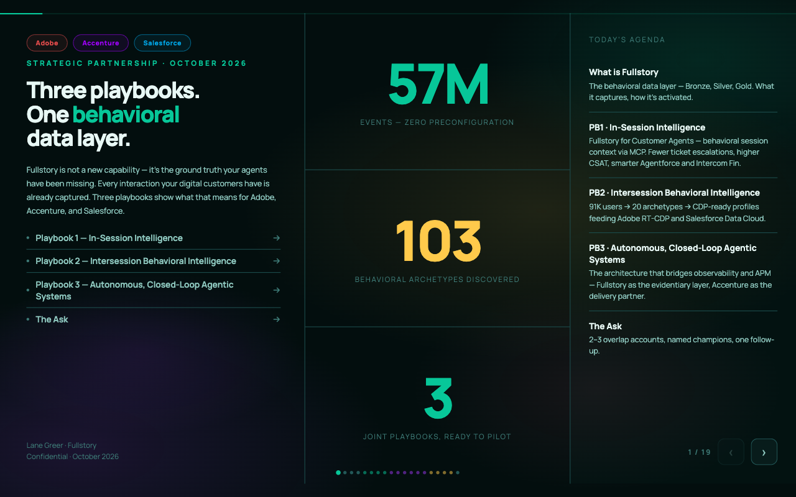
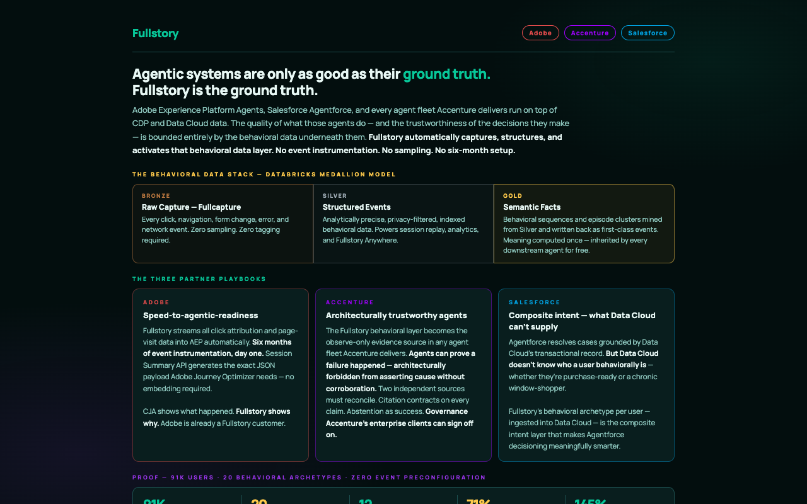
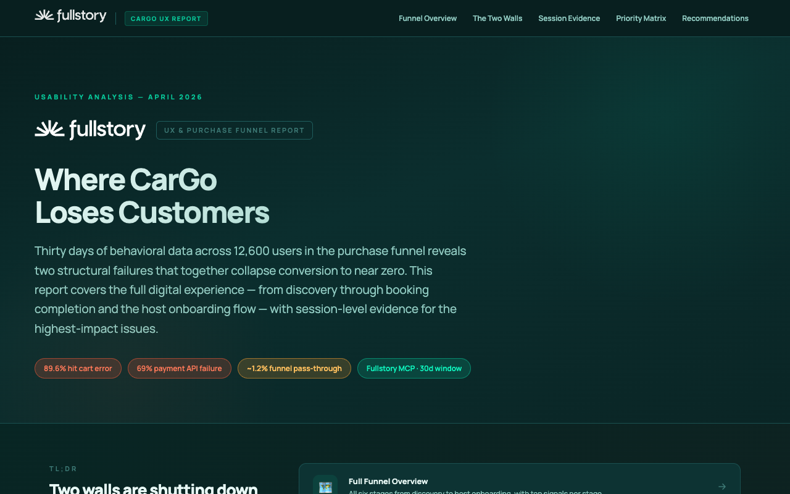
Thirty days of behavioral data across 12,600 users in the purchase funnel reveals two structural failures that together collapse conversion to near zero. This report covers the full digital experience — from discovery…
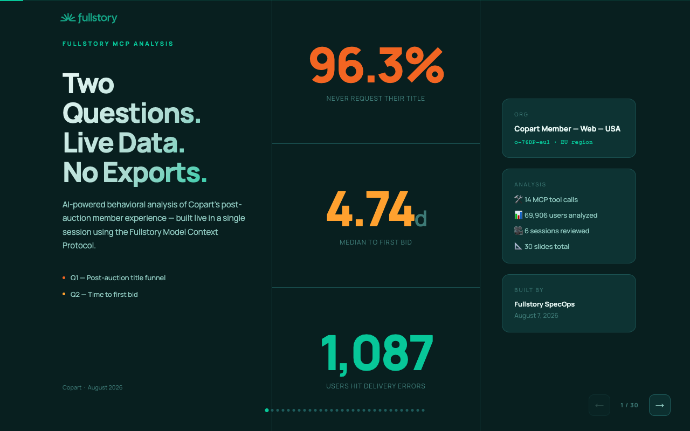
AI-powered behavioral analysis of Copart's post-auction member experience — built live in a single session using the Fullstory Model Context Protocol.
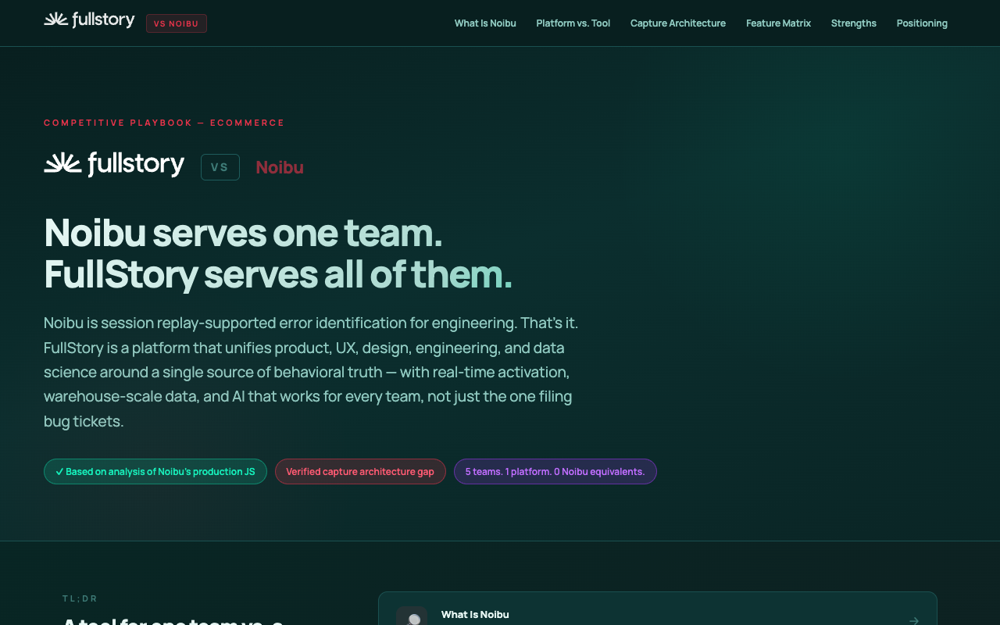
Noibu is session replay-supported error identification for engineering. That's it. FullStory is a platform that unifies product, UX, design, engineering, and data science around a single source of behavioral truth — w…
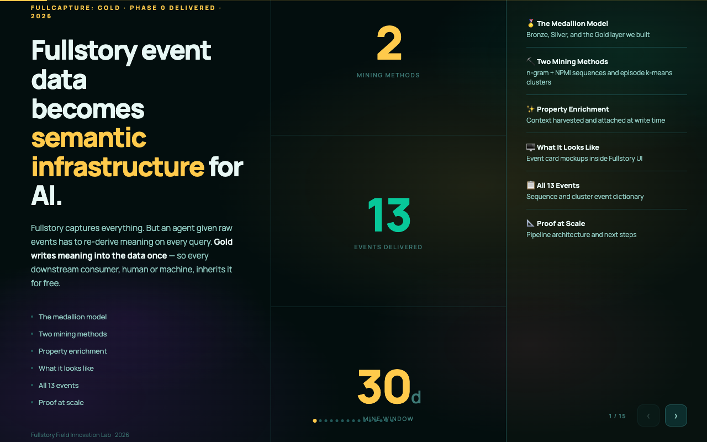
Fullstory captures everything. But an agent given raw events has to re-derive meaning on every query. Gold writes meaning into the data once — so every downstream consumer, human or machine, inherits it for free.
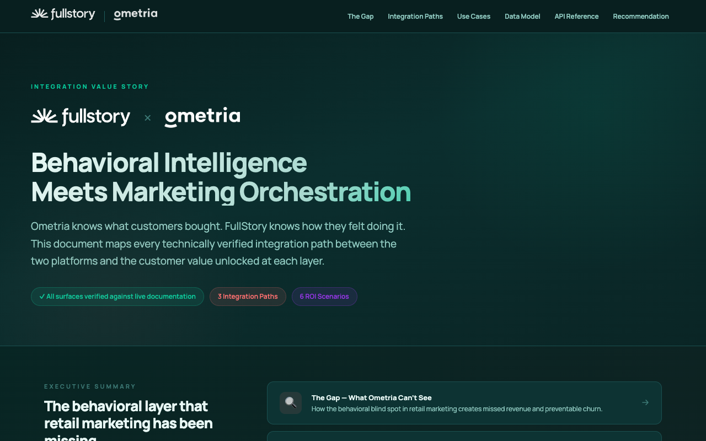
Ometria knows what customers bought. FullStory knows how they felt doing it. This document maps every technically verified integration path between the two platforms and the customer value unlocked at each layer.
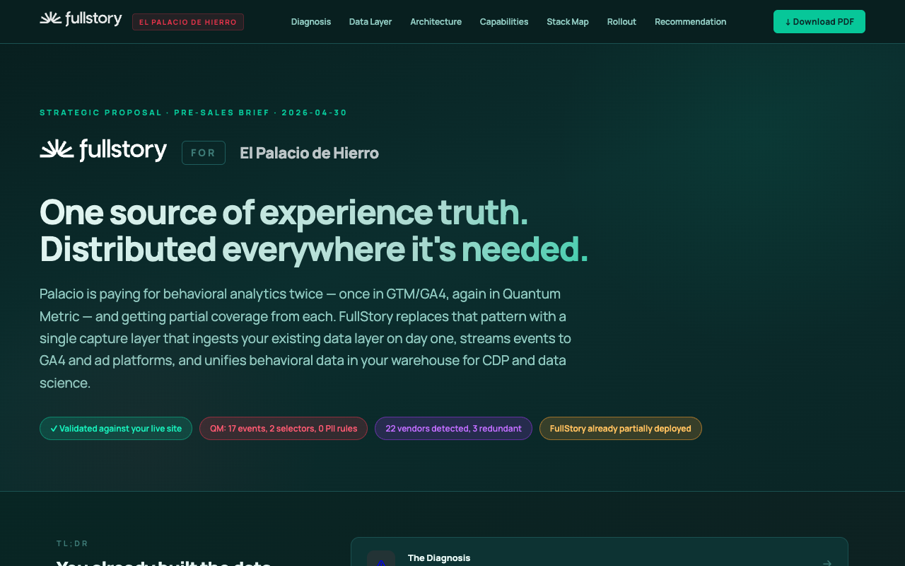
Palacio is paying for behavioral analytics twice — once in GTM/GA4, again in Quantum Metric — and getting partial coverage from each. FullStory replaces that pattern with a single capture layer that ingests your exist…
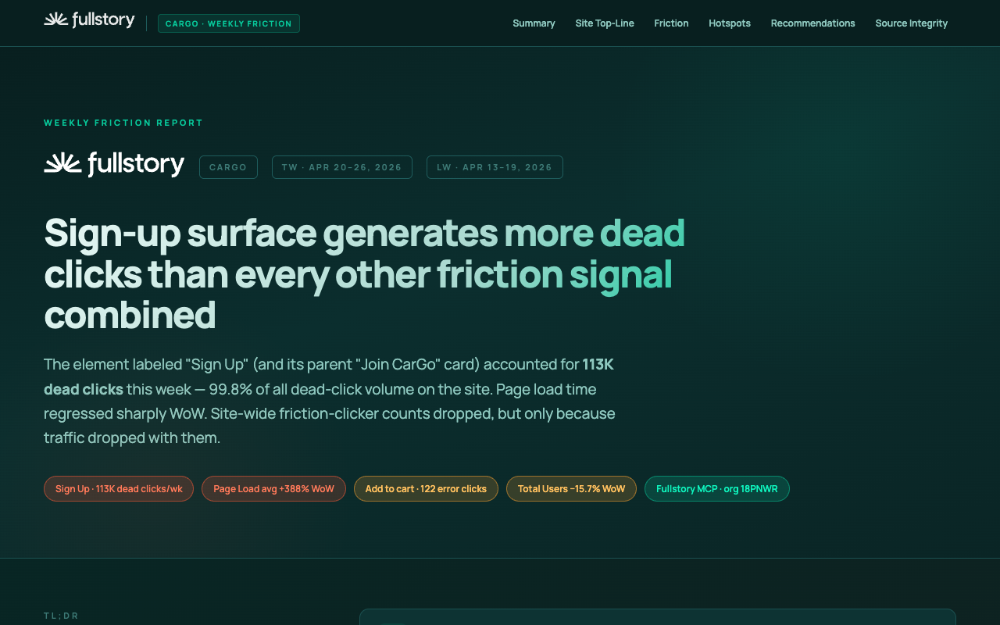
The element labeled "Sign Up" (and its parent "Join CarGo" card) accounted for 113K dead clicks this week — 99.8% of all dead-click volume on the site. Page load time regressed sharply WoW. Site-wide friction-clicker…
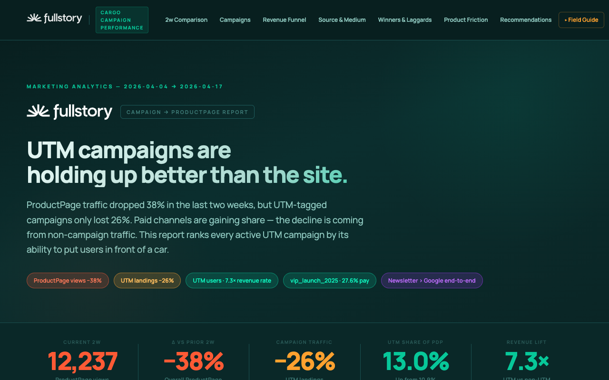
ProductPage traffic dropped 38% in the last two weeks, but UTM-tagged campaigns only lost 26%. Paid channels are gaining share — the decline is coming from non-campaign traffic. This report ranks every active UTM camp…
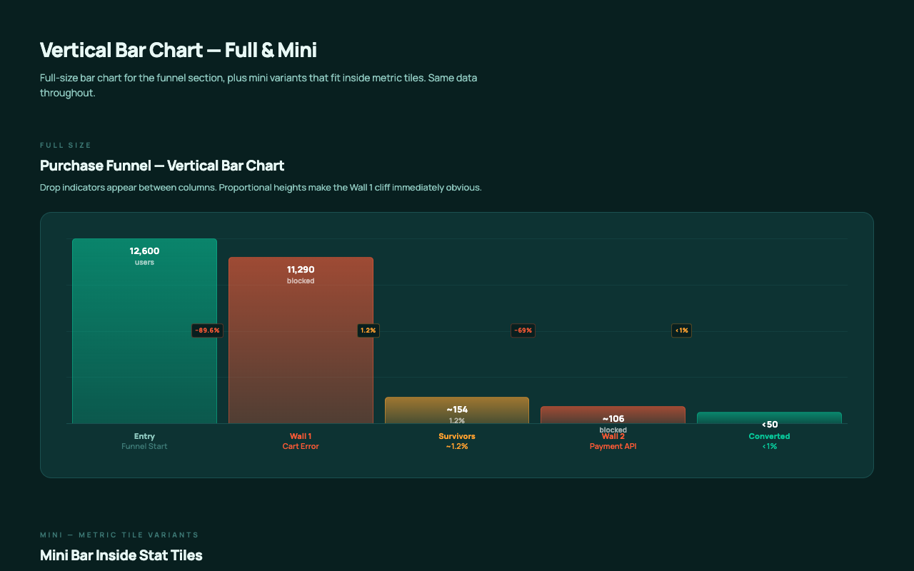
Full-size bar chart for the funnel section, plus mini variants that fit inside metric tiles. Same data throughout.
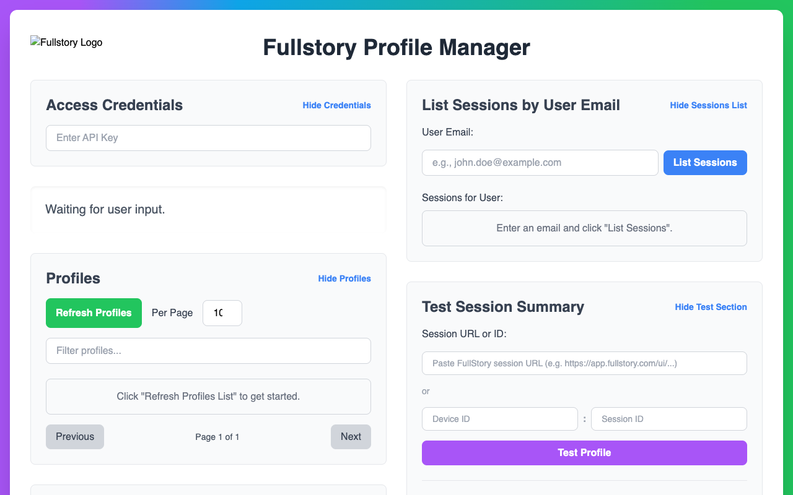
No matches.